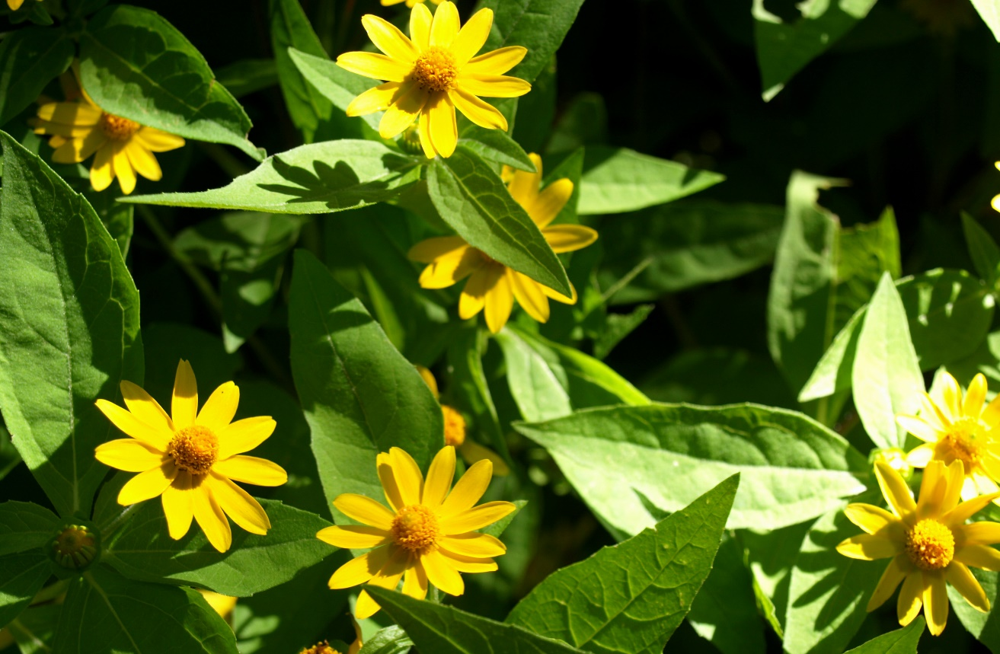

Butter Daisy is a cheerful flowering plant known for its soft yellow daisy-like blooms. It is commonly grown as an ornamental plant in gardens, pots, and landscapes. Butter Daisy is easy to grow and adds a bright, warm look to outdoor spaces.
Needs full sunlight (6–8 hours daily) for strong growth and continuous flowering.
Water moderately and allow soil to dry slightly between watering sessions.
Best growth at 18°C – 30°C in warm and sunny environments.
Use well-draining fertile soil with organic compost for best flowering results.
Produces flowers throughout warm seasons with proper care and sunlight.
Used for garden decoration, landscaping, flower beds, and potted displays.
Cause: Overwatering or poor drainage.
Solution: Reduce watering and improve soil drainage.
Cause: High humidity and poor airflow.
Solution: Improve ventilation and avoid wetting leaves.
Cause: Common garden pests.
Solution: Use natural pest control or remove manually.
Cause: Lack of sunlight or nutrients.
Solution: Provide full sunlight and fertilize regularly.
Cause: Overwatering or poor soil nutrients.
Solution: Adjust watering and improve soil quality.